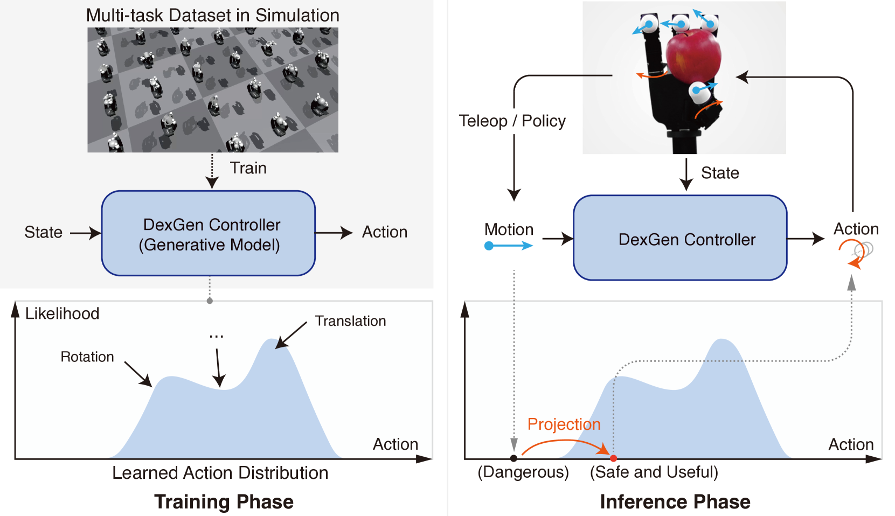
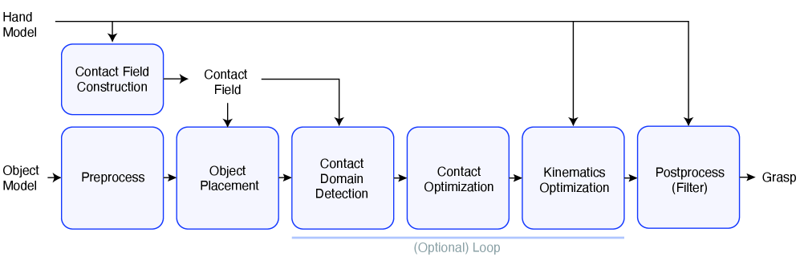
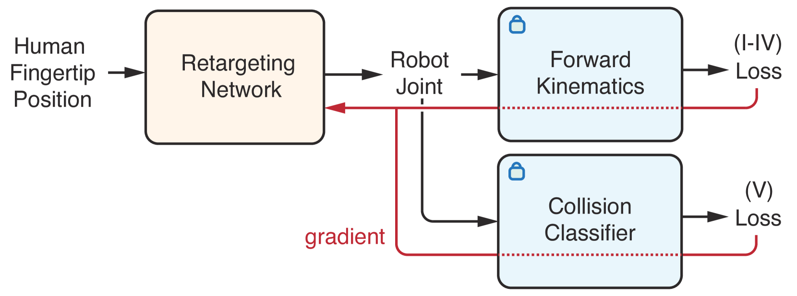

核心结论
这三篇论文不是三个平行方向，而是可以拼成一条“抓取状态生成—动态轨迹学习—在线遥操作纠偏”的完整技术链。
GeoRT
改善人手—机器人手运动学映射，追求直观、完整覆盖和低延迟。
Lightning Grasp
提供多样的几何可行抓取节点，为目标条件 RL 定义状态空间。
DexGen 类方法
学习稳定动作先验，把遥操作作为 soft guidance，而非必须服从的硬动作。
纯遥操作为何存在能力上限
Embodiment Gap
人手与 XHand 的指长、关节轴、耦合、指尖形状、柔顺性和活动范围不同。视觉上相似的姿态可能产生完全不同的接触与力传递。
接触部分可观测
物体运动由法向力、摩擦、接触位置与滑动共同决定。视觉遮挡和缺少连续触觉使操作者无法完整观察这些状态。
位置命令难以表达力
常见遥操输出为关节目标位置，操作者只能借助位置控制误差间接影响力，难以处理支撑切换和精细接触。
21 维局部错误会被放大
一根承担支撑的手指只要产生一次错误张开，就可能导致接触断开。操作者训练无法消除形态差异和感知缺失。
更准确的研究问题
在保持控制感的同时，实时修正掉落、碰撞、失稳和不可达动作？
三篇论文的统一系统架构
两个不同的学习映射
human keypoints → nominal robot motion
目标是直观、覆盖充分、低延迟，对应 GeoRT。它表达操作者想做什么。
(state, nominal motion) → safe action
目标是接触稳定、物理可行和最小干预，对应 DexGen 类控制器。它决定怎样安全地做。
不把遥操作命令当作必须执行的动作，而把它作为运动提示；生成模型从稳定操作分布中寻找尽可能符合提示的安全动作。

① 左上：数据决定能力边界
控制器不会凭空获得灵巧性；它依赖仿真多任务数据覆盖旋转、平移与抓取迁移。
② 左下：学习动作先验
生成模型学习当前状态下哪些动作高概率、稳定且具有多模态行为，而非回归唯一动作。
③ 右侧：遥操作作为 guidance
用户给方向，DexGen 在动作分布上做投影；危险提示可以被拒绝，但应尽量保留意图。
训练与推理
多任务 RL
Anygrasp-to-anygrasp、旋转、平移、自由手指运动轨迹数据
论文规模约 1×10¹⁰ transitions；过滤掉落前失败片段生成式控制器
UNet diffusion + residual MLP inverse dynamics模型以未来手指关键点位移作为中间动作表示，扩散模型学习 p(Δx | observation)，逆动力学模型再将关键点运动转换为关节目标。遥操作运动通过扩散采样梯度引导加入：
λ 过小会削弱操作者控制感，过大则让危险命令压过安全先验。这是在线系统最关键的控制权权衡。
- 机器人关键点运动适合作为人机共享动作表示。
- 能够覆盖危险用户动作，形成论文所称的接触“磁吸效应”。
- 安全先验与用户意图可通过 guidance 强度连续调节。
- 只用关节误差做隐式触觉，无法恢复完整接触几何。
- 低层控制器无视觉，工具对准仍依赖高层闭环。
- 真机用户仅 2 人，操作者泛化证据有限。
- 原论文数据和训练算力很大，不应作为最低复现门槛。
通过 Contact Field 将昂贵几何计算与搜索解耦，快速生成多样的几何可行抓取，是 any-grasp-to-any-grasp 数据管线的状态引擎。

① 离线资产
Hand Model 既用于 Contact Field 构建，也为后续 IK 和碰撞过滤提供运动学与网格。
② 搜索主链
Object Placement 决定腕物相对位姿；Contact Domain 与 Contact Optimization 决定多指接触组合。
③ 物理可执行化
Kinematics Optimization 将接触目标落到关节配置，Postprocess 过滤碰撞和低质量候选。
Contact Field
编码手部可能产生的接触位置与法向接触组合与 IK
查询物体接触域、优化多指接触、运动学精修可行抓取
碰撞过滤后输出 q + object pose与学习控制的接口
现有数据可以支持课程学习、状态安全判别、图搜索和接触拓扑变化任务。下一步应优先验证 5,548 节点图中不同边类型的动态可达率。
用无监督几何目标训练轻量分指 MLP，把人手指尖关键点映射到机器人关节位置；不做在线优化，达到 1 kHz。

① 网络只输出关节
输入是人类指尖位置，输出是对应机器人手指关节；训练不需要成对的人手—机器人手姿态标签。
② FK 定义几何监督
运动保持、C-space 覆盖、平坦性和捏合关系都在机器人关键点空间计算。
③ 碰撞只参与训练
碰撞分类器提供可微约束；部署时 FK 和碰撞网络都移除，因此轻量 MLP 可达到 1 kHz。
Motion Preservation
保留人手局部运动方向，使控制符合直觉。
C-space Coverage
尽量覆盖机器人完整指尖活动范围。
High Flatness
让不同区域的控制灵敏度近似均匀。
Pinch Correspondence
人手捏合映射为对应机器人手指捏合。
Collision-free
利用仿真碰撞分类器约束自碰撞输出。
Unsupervised
不需要人工标注的人手—机器人手成对姿态。
迁移到 XHand
- 定义 XHand 五指关键点及与人手的对应关系；
- 从 URDF 生成随机
q → fingertip keypoints数据； - 生成自碰撞标签并训练 collision classifier；
- 为每位操作者采集约 5 分钟人手 C-space 和 pinch 数据；
- 训练五个分指 MLP，并专门处理
right_hand_ltspalm_joint； - 同时用几何指标和真机任务验收。
公司现有资产与技术映射
| 现有资产 | 在主线中的作用 | 仍需补齐 |
|---|---|---|
| XHand URDF、FK 与碰撞配置 | GeoRT 机器人 C-space 数据与碰撞监督 | 五指关键点定义、FK 数据生成器、碰撞分类器 |
| 30,000 几何抓取 | Anygrasp-to-anygrasp 初始与目标状态 | 多物体覆盖、动态稳定性和版本化 manifest |
| 5,548 节点 kNN 图 | 课程学习的局部目标与抓取拓扑结构 | 每条边的动态可达性标签 |
| IsaacLab 筛选结果 | RL episode 初始化与稳定节点预筛 | 筛选代码同步、环境复现和 XHand 参数标定 |
| 现有遥操作系统 | 纯遥操作 baseline 与在线运动提示 | GeoRT 对比、日志格式、人因评测协议 |
统一优化视角
D_intent 衡量执行动作偏离用户意图的程度；A_safe(s) 由仿真稳定轨迹学习。后续论文都可以沿“如何表达安全先验、如何表达意图、如何解决冲突”三个维度比较。
建议研发路线
Phase 0｜建立纯遥操作基线
迁移 GeoRT 到 XHand；设置静态捏取、旋转、功能抓取和指定重抓取；区分新手与熟练操作者，记录掉落、碰撞、时间、抖动与接触保持。
Phase 1｜训练局部抓取迁移策略
从同拓扑近邻开始训练 goal-conditioned RL，再引入异拓扑边；对每条 kNN 边执行动态验证并收集成功 rollout。
Phase 2｜训练遥操作动作纠偏器
依次比较 residual policy、轨迹检索/action projection、diffusion 或 flow controller。先建立可解释基线，再增加生成模型复杂度。
Phase 3｜Sim-to-Real 与人因评测
随机化摩擦、质量、重心、延迟、PD 参数、腕姿态与噪声；增加物体位姿，按条件引入触觉，并对辅助强度进行在线调节。
Phase 2 的三类算法候选
Residual Policy
输出对 GeoRT 关节命令的残差，工程最简单，容易分析系统何时干预。
Retrieval / Projection
从抓取图或成功轨迹库检索最符合意图的安全局部动作，解释性强。
Diffusion / Flow
学习多模态动作先验，通过遥操作 guidance 在安全性与控制感间连续权衡。
必须建立的评测体系
- 端到端频率与延迟
- Motion preservation
- XHand C-space coverage
- Pinch correspondence
- 自碰撞和关节限位率
- 静态抓取成功率与时间
- 任务成功率
- Time-to-fall
- 接触断开与物体滑动
- 相对用户命令的偏差
- 系统覆盖用户动作比例
- 新手—专家性能差距
- 图边动态可达率
- 同/异拓扑迁移成功率
- 单位 GPU 小时成功轨迹数
- 状态和接触拓扑覆盖
- Sim-to-real 成功率衰减
- 跨物体泛化
当前工程缺口与优先级
| 优先级 | 缺口 | 原因 |
|---|---|---|
| P0 | XHand GeoRT 模型与基准 | 决定在线输入是否直观、稳定、低延迟 |
| P0 | kNN 边动态验证 | 状态相近不等于可迁移，决定 RL 目标是否可信 |
| P0 | Anygrasp-to-anygrasp RL 环境 | 将静态抓取转换为 DexGen 所需动态轨迹 |
| P0 | 物体位姿实时观测 | 学习辅助器需要当前 hand-object state |
| P1 | 多物体 Lightning Grasp 数据 | 单苹果无法形成通用操作先验 |
| P1 | XHand 仿真参数标定 | 直接决定 sim-to-real 误差 |
| P2 | 触觉接口与数据管线 | 提升滑动和接触几何感知，但不是首阶段前置条件 |
本批次结论
- 不能只靠更好的 retargeting 解决灵巧操作。GeoRT 改善运动学映射，但无法理解物体接触。
- 不能把抓取数据误当成操作数据。Lightning Grasp 提供状态节点，还需要动态策略生成迁移轨迹。
- 学习辅助器应追求最小干预。人类负责语义和目标，模型只在必要时修正低层动作。
- 先做缩小版 DexGen。从单物体、局部邻边和 residual/retrieval 基线证明价值，再扩大数据与模型。
- 必须评估操作者因素。成功标准不只是专家最好成绩，还包括新手学习成本和控制感。
论文来源
- DexterityGen: Foundation Controller for Unprecedented Dexterity
- Lightning Grasp: High Performance Procedural Grasp Synthesis with Contact Fields
- Geometric Retargeting: A Principled, Ultrafast Neural Hand Retargeting Algorithm
本报告为持续更新的调研档案。后续论文将按数据、重定向、共享自主、动作先验、Sim-to-Real、视觉与触觉等路线并入总报告。